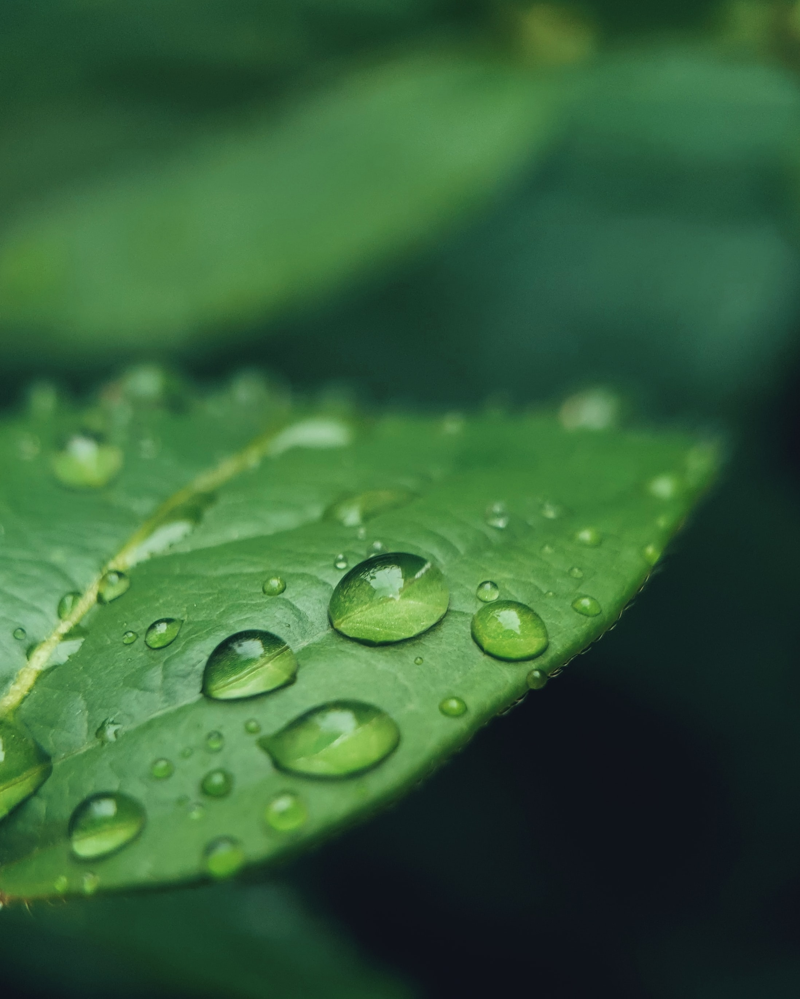

Leaf
As he gazed down on the Amazon from above, shining leaves formed waves of foliage. The wind rippled through them, creating eddies and pools of green. From this point of view, some people may have just seen trees. But from his lofty perch, Kolby Jardine, a researcher at the Department of Energy's (DOE) Lawrence Berkeley National Laboratory, saw more — the forest's complex ecological cycle. Starting from emissions put out by the leaves to the clouds high above, each component influences all of the others.
Jardine was part of the DOE Office of Science's "Green Ocean Amazon" or GoAmazon project, which focused on better understanding the Amazon Basin's water cycle. By taking data on a swaying, narrow platform taller than a 10-story building, Jardine hoped to peer into one part of this system — how tropical leaves produce emissions.
"You really feel what it's like to be a leaf in the upper canopy," he said.
The Amazon is the world's largest and most diverse tropical rainforest, stretching over nine countries. While human-made emissions pollute the air in the dry season, the air above the Amazon in the wet season is one of the cleanest places on earth.
That contrast makes it the perfect place for Jardine and other researchers to study how trees let off emissions and what effects those emissions have on climate.
Trees and other plants produce hundreds to thousands of volatile organic compounds (VOCs). These carbon-based chemicals easily evaporate from a liquid or solid into air at much lower temperatures than most chemicals. For example, your nose is sensing VOCs when you smell pine trees. Other VOCs are human-made, such as ones that produce the "new car smell." While human-made VOCs dominate in urban areas, VOCs produced by trees play a major role in the Amazon.
Within minutes to hours of trees releasing them, VOCs react with ozone and other chemicals in the atmosphere. They group together to become larger compounds or react with human-made emissions from diesel vehicles or fossil fuel-burning power plants. In both cases, they form secondary organic aerosols (SOAs), solid or liquid particles suspended in gas.
From forming smog to influencing cloud formation, SOAs drive a number of atmospheric and climatic processes. The interactions between aerosols, VOCs, and other biological emissions create one of the biggest uncertainties in climate models. The Department of Energy's Office of Science is supporting research on VOCs from trees and the SOAs they form.
떼엑미니

- Root
- Root
- Root